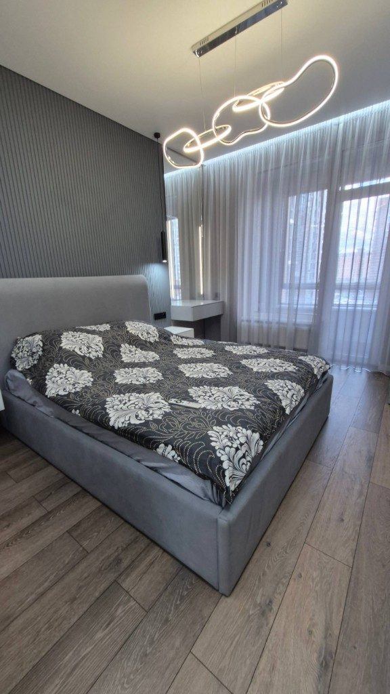
ЖК Tau House
Паспорт объекта
Площадь: 3-комнатная · площадь уточняется · Тип: 3-комнатная квартира · Формат: Дизайн + ремонт под ключ · Сегмент: Комфорт
Адрес: Уфа, ул. Энтузиастов, 7
Запрос заказчика
Заказчик хотел современную квартиру «под ключ» без лишней перегрузки в интерьере: светлые тона, функциональные зоны, качественная инженерная часть и понятный результат по проекту. Важно было заранее увидеть планировку решений и получить аккуратную реализацию в срок.
План и описание объекта
Выполнены демонтажные работы, замена электрики и сантехники, выравнивание оснований и чистовая отделка по дизайн-проекту. Смонтированы потолки, двери, свет, установлена сантехника и чистовая фурнитура. Объект передан в состоянии, готовом к меблировке.
План объекта будет добавлен.
Краткий список работ
- Демонтаж старых покрытий и подготовка оснований
- Полная замена электрики и сантехники
- Штукатурка и выравнивание стен, подготовка под финишную отделку
- Устройство стяжки и выравнивание пола
- Чистовая отделка: напольные покрытия, стены, плитка в мокрых зонах
- Монтаж натяжных потолков и светильников
- Установка межкомнатных дверей и плинтусов
- Монтаж кухонного фартука и сантехники
- Установка розеток, выключателей и финальная уборка
Проект и реализация
- Светлый современный интерьер без перегруза
- Аккуратная чистовая отделка и освещение
- Функциональные зоны для семейного проживания
- Ремонт выполнен по дизайн-проекту под ключ
- Квартира готова к меблировке
Галерея
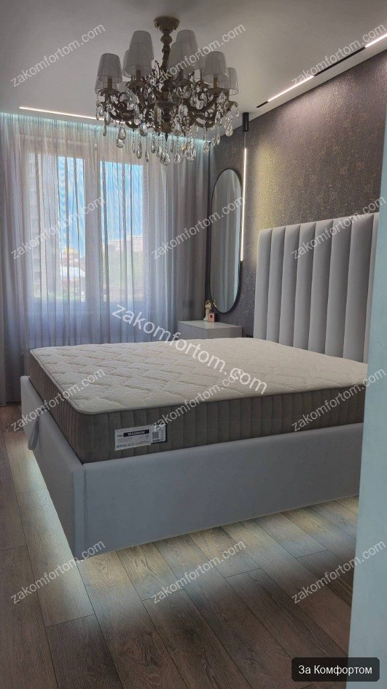
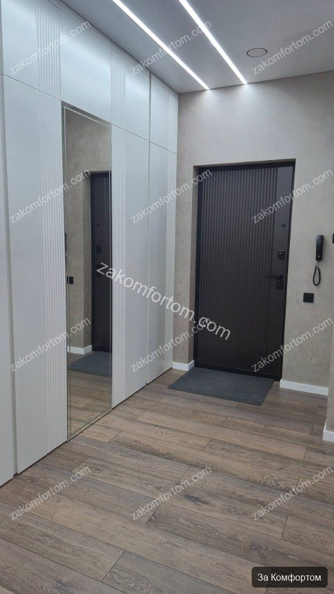
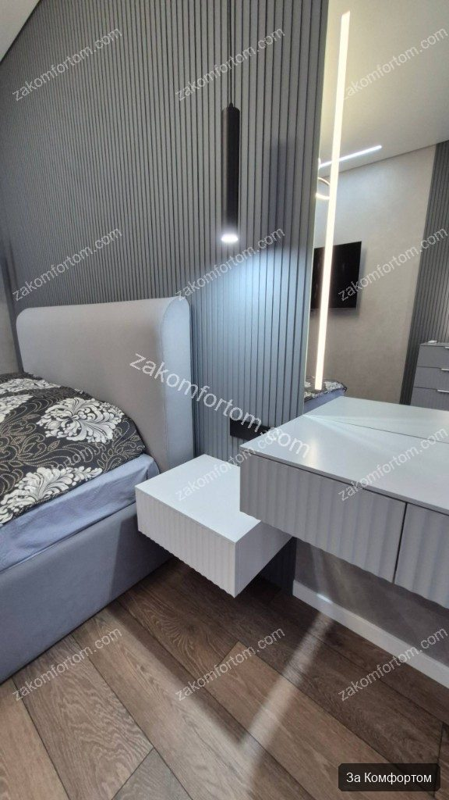
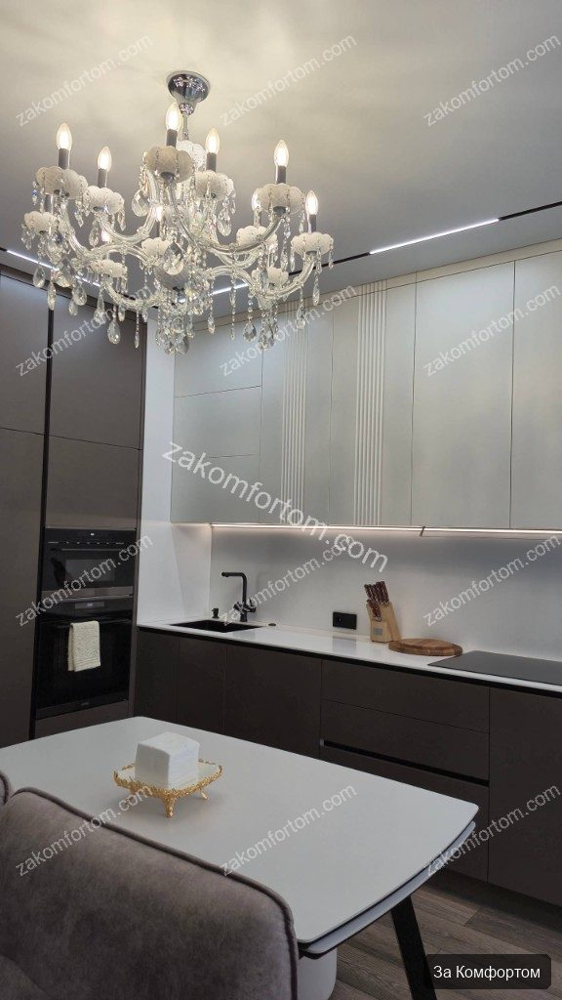
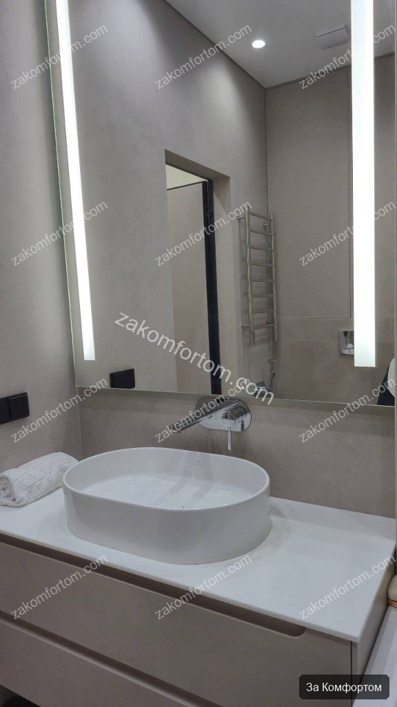
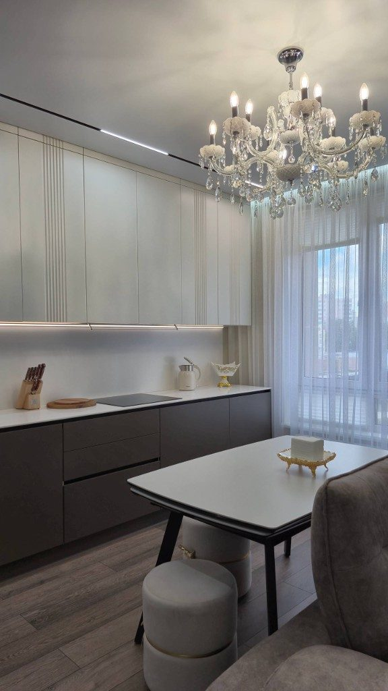
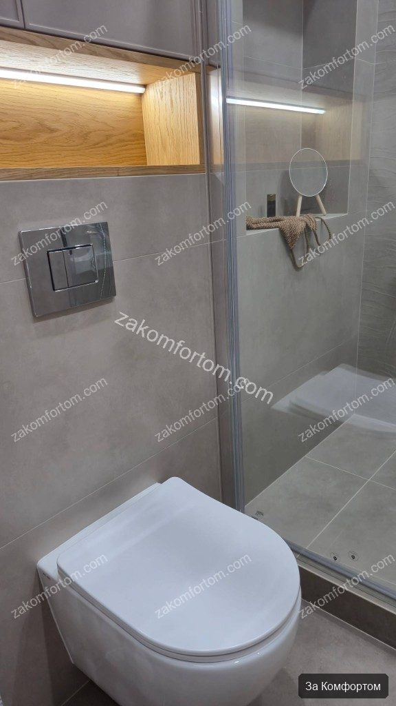
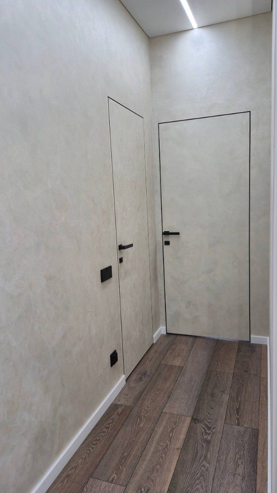
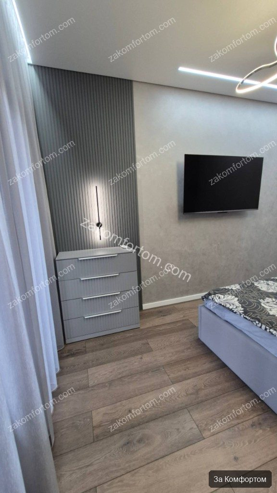
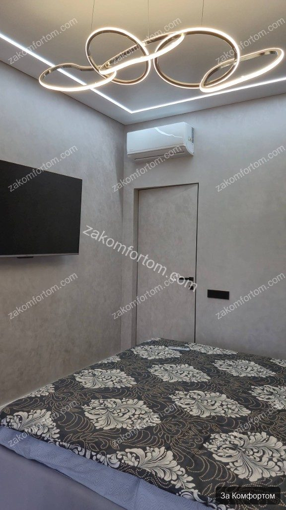
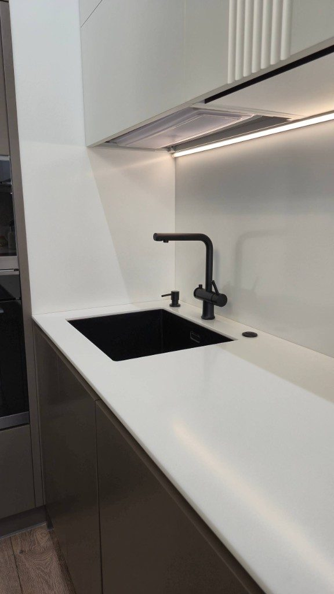
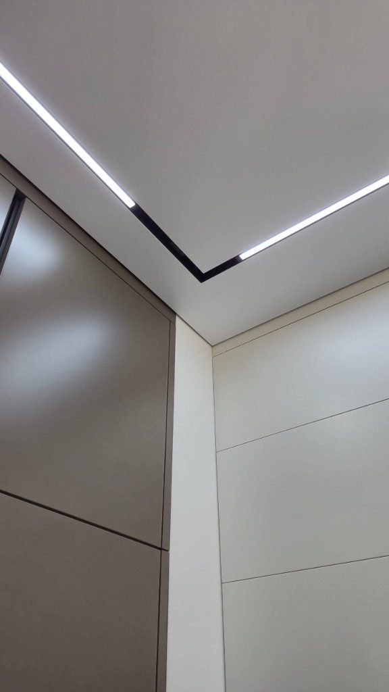
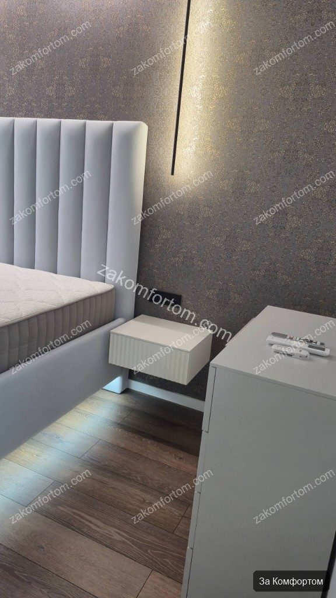
Фото до ремонта
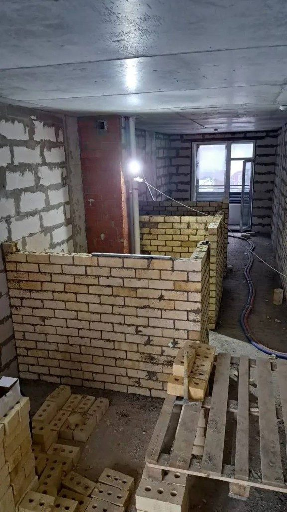
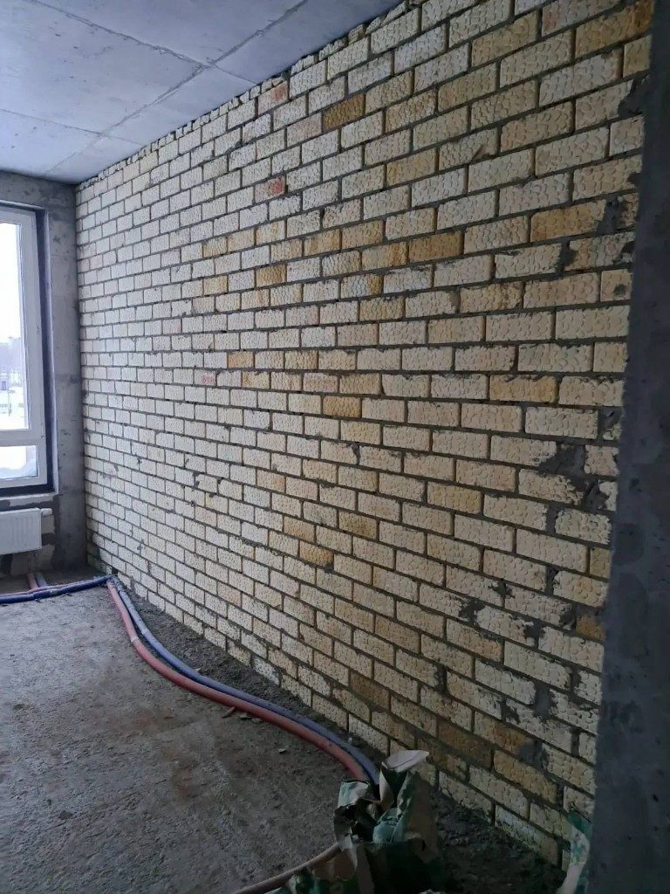
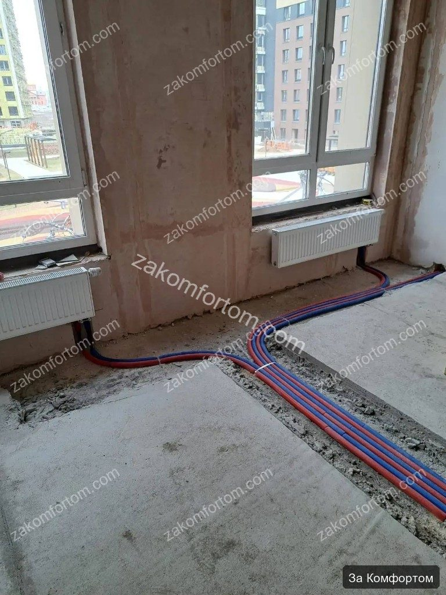
Видео с комментариями эксперта
Если узнаёте себя
- Любите светлый интерьер без перегруза деталями и «дизайнерского шума»
- Хотите снять с себя координацию бригад — один договор, один результат
- Важно заранее понимать, как будет выглядеть квартира, а не узнавать на финишной отделке
- Ищете подрядчика с реальными сданными квартирами в новостройках Уфы